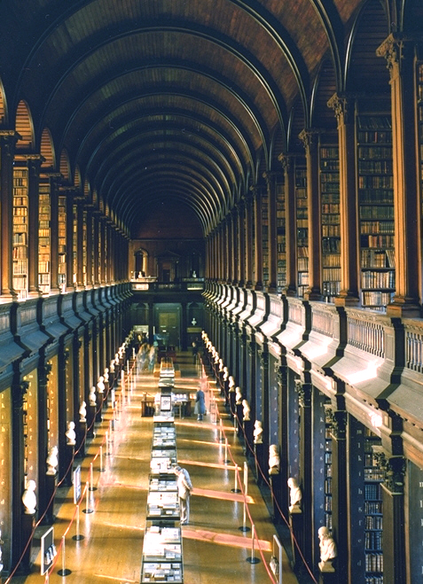

The annual meeting of the Irish Mathematical Society
April 15-16, 2016, School of Mathematics, Trinity College Dublin, the University of Dublin.
This year, the meeting celebrates the 40th anniversary of the Society; the meeting where the constitution of the Society was accepted took place at TCD on 14 April 1976. The meeting is organised by Vladimir Dotsenko and Richard Timoney.
 |
Invited speakersDavid Conlon (Oxford) Graham Ellis (NUIG) Stephen Gardiner (UCD) Derek Kitson (Lancaster) Anca Mustata (UCC) Andreea Nicoara (TCD) Ann O'Shea (NUIM) Rachel Quinlan (NUIG) Stuart White (Glasgow) |
Registration
There is no registration fee for IMS members, the registration fee for non-IMS members will be €20, payable in cash on the first day of the event. To facilitate the catering arrangements, we request the participants to register before April 1. The registration form is available through the http URL http://tinyurl.com/IMSApril2016.Timetable
All lectures will take place in Maxwell lecture theatre, Hamilton Building (see the interactive map http://www.tcd.ie/Maps/map.php). Titles of the talks are below, all abstracts are available in PDF format via the http URL http://www.maths.tcd.ie/~vdots/IMS2016Abstracts.pdf.
Friday April 15
9:30-10:00 Registration
10:00-10:50 David Conlon, Inequalities in graphs
Coffee break
11:15-12:05 Andreea Nicoara, Connections between several complex variables and real algebraic geometry
12:10-13:00 Stephen Gardiner, Universal approximation in analysis
Lunch (sandwiches provided)
14:00-14:50 Stuart White, Quasidiagonality and amenability
14:55-15:45 Graham Ellis, Computing with 2×2 matrices
Coffee break
16:10-17:00 Ann O'Shea, Understanding understanding
18:30 Conference dinner at Dunnes and Crescenzi, 16 South Frederick Street, Dublin 2
Saturday April 16
10:00-10:50 Anca Mustata, Combinatorial data encoding the intersection theory and the Gromov-Witten invariants of a variety with C× action
Coffee break
11:15-12:05 Derek Kitson, Combinatorial characterisations for rigid symmetric frameworks
12:10:13:00 Rachel Quinlan, I almost wish I hadn't gone down that rabbit-hole...
13:00-14:00 IMS General Meeting (note the venue: New Seminar Room of School of Mathematics, House 20, Westland Row)